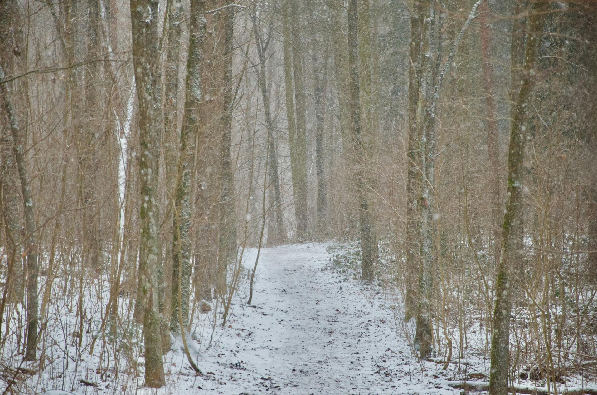

❄️ #79 — L'Hiver sur le territoirePartie 1 / 4
C'est quoi l'hiver au Québec

L'hiver : neige, froid et territoire — une saison de vigilance.
Article #79 en 4 parties
L'Hiver sur le territoire — Carnet n° 4 de Pierre le Fouineur. Le reportage complet paraît en quatre parties, une tous les deux jours à partir du 4 juil. 2026.
| Partie | Sujet | Publication |
|---|---|---|
| 1 | C'est quoi l'hiver au Québec — températures, vent, neige, glace | 4 juil. 2026 |
| 2 | Lire les traces, raquettes, s'habiller contre le froid | 6 juil. 2026 |
| 3 | Traîneaux, chiens, bois sous la neige (renvois #76 #77 #78) | 8 juil. 2026 |
| 4 | Abri, rituels, spiritualité, conclusion | 10 juil. 2026 |
Carnet n° 4 — Jean-Claude — Mon ami Pierre m'a confié ce carnet sur l'hiver au Québec — le premier d'une série sur les saisons. Printemps, été et automne viendront plus tard. Je te le transmets tel qu'il l'a écrit, avec le concours des savoirs des onze nations — je n'invente rien.
Qui est Pierre le Fouineur ?
Mon ami Pierre m'a fait part, un jour, de vieux carnets trouvés chez lui — les récits laissés par son arrière-grand-père, lui aussi prénommé Pierre. On l'appelait Pierre le Fouineur.
Coureur des bois, il marchait le Québec en toutes saisons : portages, cabanes de troc, silence et neige. Il avait déjà laissé des carnets sur la chasse, la pêche et le feu — ici il parle uniquement de l'hiver.
Je n'invente rien. Je transmets.
Voici le carnet n° 4, remis entre mes mains par Pierre.
Février 1927 — Wemotaci. Les doigts engourdis, l'encre qui fige par moments sur le papier. Pierre le Fouineur écrit ce qu'il a vu et entendu : pas pour tout comprendre, mais pour transmettre — comme une rivière qui murmure à celui qui s'arrête.
L'hiver au Québec n'est pas une « saison froide » qu'on traverse en attendant le printemps. Pour les Premières Nations, c'est une façon d'habiter le territoire : lire la neige, choisir son bois, nourrir ses chiens, garder le feu vivant dans le froid. Ce carnet est le premier sur les saisons ; printemps, été et automne viendront plus tard.
1. C'est quoi l'hiver au Québec — pour ceux qui ne le savent pas
Avant de parler des nations, il faut dire le climat. Le Québec s'étire du fleuve Saint-Laurent jusqu'au Nunavik arctique : l'hiver n'est pas le même partout, mais partout il impose le respect.
- Les températures. Dans le sud (Montréal, Québec, Abénakis, Wendat), on peut voir de −15 °C à −30 °C en janvier-février, parfois plus avec le vent. Dans le nord (Innu, Cris, Naskapi, Inuit), −35 °C à −45 °C n'est pas rare ; le froid « mord » la peau en quelques minutes si elle est exposée.
- Le vent. Il transforme le froid en danger. Un refroidissement éolien de −40 ou −50 est possible : la neige poudreuse devient un sable qui vous aveugle, les forêts hurlent, et les anciens disent qu'il faut « écouter le vent avant de sortir » — il annonce la tempête ou la clairière.
- L'épaisseur de la neige. Au sud, 30 cm à 1 m sur une saison ; en forêt boréale et sur la toundra, 1 à 2 m ou plus, avec des congères où un homme disparaît jusqu'à la ceinture. La neige n'est pas uniforme : croûte de glace le matin, poudre l'après-midi, neige lourde sur les branches qui tombe en « avalanches » silencieuses.
- Les jours courts. En décembre-janvier, le soleil se lève tard et se couche tôt ; il reste une lueur grise sur la neige. Les gens vivent plus près du feu, plus près les uns des autres — c'est la saison des récits.
- L'eau qui change d'état. Rivières et lacs gelés : on marche, on perce la glace, on traverse en traîneau là où l'été il fallait un canot. La glace n'est jamais « évidente » : les anciens testent l'épaisseur avec une perche, écoutent les craquements.
Pierre note cela en ouverture pour que personne ne lise la suite en croyant que l'hiver québécois ressemble à une « jolie carte postale ». C'est une saison de vigilance — et de savoir-faire transmis depuis des millénaires.